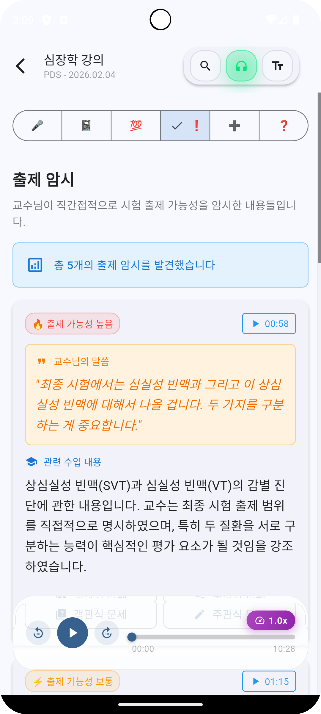
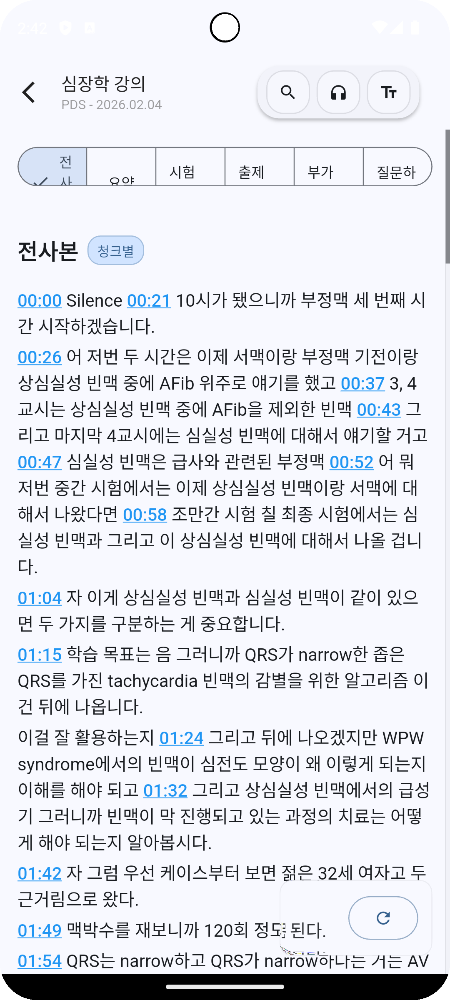
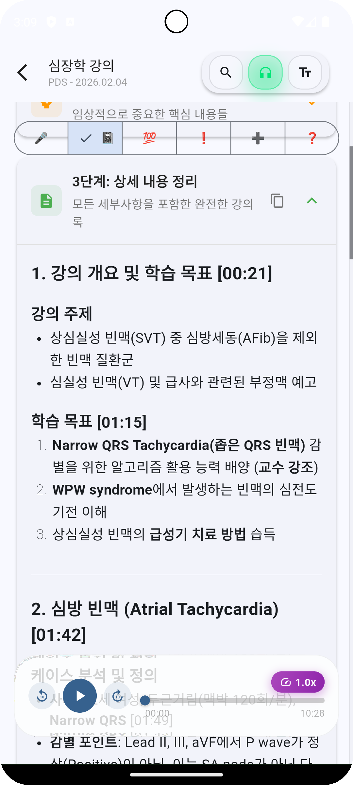
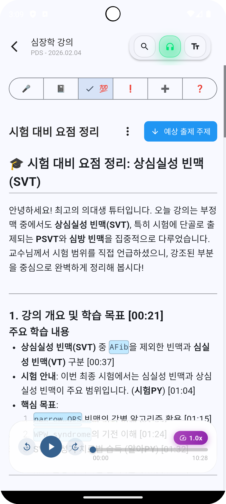

녹음 버튼 하나만 누르세요.
AI가 전사, 요약, 시험 출제 포인트까지 자동으로 분석합니다.

Features
복잡한 의학 강의, 더 이상 필기에 집중할 필요 없습니다.
AI가 당신의 학습 어시스턴트가 되어드립니다.
강의를 녹음하면 AI가 의학 전문 용어까지 정확하게 텍스트로 변환합니다. 타임스탬프로 원하는 구간을 바로 찾을 수 있어요.
강의 개요, 학습 목표, 핵심 내용을 구조화된 노트로 자동 정리합니다. 복습 시간을 획기적으로 줄여줍니다.
"시험에 나옵니다" 같은 교수님 발언을 AI가 자동 감지합니다. 해당 구간 음성도 바로 재생할 수 있어요.
강의 내용을 시험 관점에서 재구성합니다. 예상 출제 주제와 핵심 포인트를 한눈에 파악하세요.
App Preview
심장학 강의를 녹음한 실제 분석 결과입니다.

타임스탬프와 함께 강의 내용을 정확하게 텍스트로 변환

학습 목표, 핵심 개념을 구조화된 노트로 자동 정리
교수님의 시험 힌트를 자동으로 감지하고 정리

시험 관점에서 핵심 내용을 재구성하여 요약
How it works
앱에서 녹음 버튼만 누르세요. 강의실에서 바로 고품질 녹음이 시작됩니다.
녹음이 끝나면 AI가 전사, 요약, 출제 포인트 분석을 동시에 진행합니다.
전사본, 요약 노트, 출제 암시, 시험 대비 요점까지. 바로 복습을 시작하세요.
For Medical Students
본과 수업은 빠르고, 내용은 방대하고, 시험은 어렵습니다.
MediPrep AI가 필기와 정리를 대신해드립니다.
당신은 강의에만 집중하세요.
녹음 하나로 시험 준비의 절반을 끝내보세요.
Google Play에서 다운로드Android 지원 | iOS 출시 예정